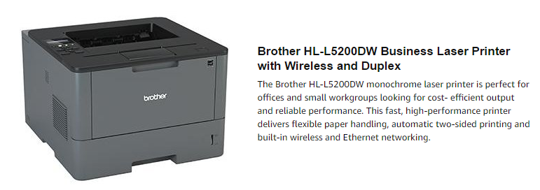
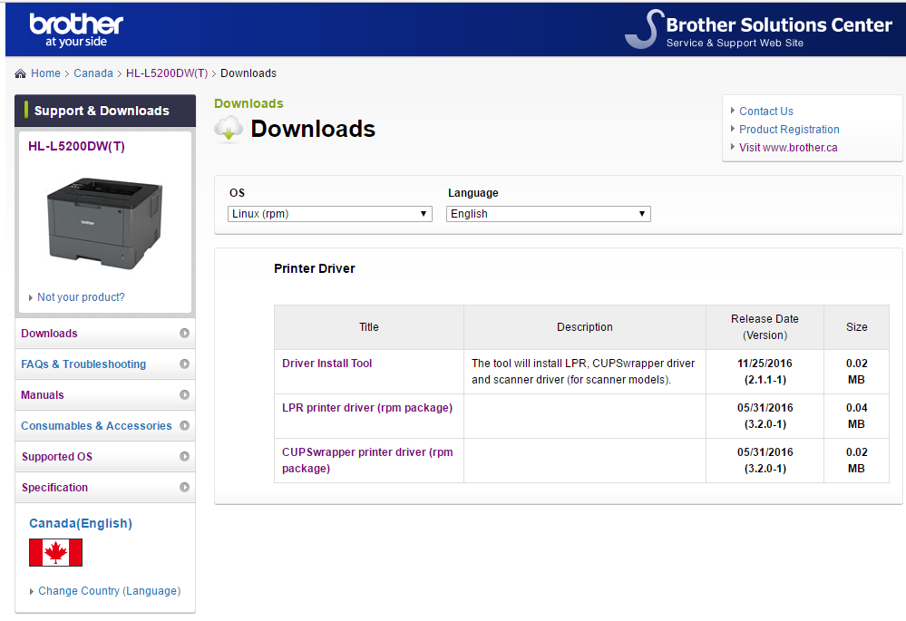
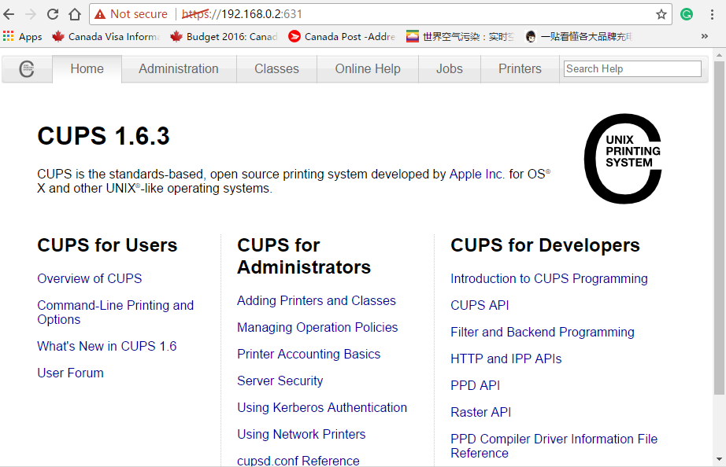

The firt expensive thing I bought in Canada is a printer from Brother company. It cost me C$150 and I hope it can last a long life. It looks really cool, right?
The next step after its arriving is connecting it to my Linux notebook and Windows desktop and making it work well. I don't think anyone has a problem with installing it on Windows. So, I'll only demostrate the situation of Linux.
PC: Panasonic Toughbook CF-19 MK5, IP:192.168.0.2/24, CentOS 7 X64 with CUPS printing system
PRINTER: Brother HL-L5200DW, IP: 192.168.0.253/24 This printer has a small lcd screen and keys to set its network interfaces. There are usb, wired and wireless network interfaces in the printer. We used wired network for this time.
NETWORK: the printer and pc are connected to the same LAN.
CUPS is the most common printing software for Apple and Linux. It's developed by Apple Inc but it's still an open source software.
Cups is able to recognize many file types, such as text, pdf, postscript, png, jpg... Cups's main job is translating these input files into a set of specific commands and data that printers can understand and process.
Printers can be classified to 2 categories: One is able to accept PostScript, the other is unable to do that but able to accept other script like PCL or non public script. For PostScript Printers, cups only needs to translate input file into postscript then send data to the printer directly.
For Non-PostScript Printers, cups also translate input files into postscript but besides that it has to do a nother tranlation before sending data to printers. Cups does this extra step by putting the postscript to a printer driver who does the real translation work. In cups, we call a printer dirver *filter*.
According to Brother's official document, HLL5200DW supports PCL6, BR-Script3, IBM Proprinter XL, Epson FX-850, PDF version1.7, XPS version 1.0. But PostScript is not in the list, so it is a Non-PostScript printer.
How to match a printer and its driver is cups's job. The key to do this job is the PPD(PostScript Printer Description) files. Every printer in cups must have a corresponding PPD file which describes the printer's capabilities and where to find its driver. The following is a part of a printer's ppd file.
/usr/share/cups/model/brother-HLL5200DW-cups-en.ppd:
*PPD-Adobe: "4.3" *%================================================ *% *% Copyright Brother Industries,Ltd 2006-2015 *% "Brother HLL5200DW for CUPS" *% *%================================================ *% *%BrCustomPaperSize: TRUE *%BrPrinterType: DT3 *% *%==== General Information Keywords ======================== *FormatVersion: "4.3" *FileVersion: "1.00" *LanguageEncoding: ISOLatin1 *LanguageVersion: English *Manufacturer: "Brother" *PCFileName: "HLL5200.PPD" *Product: "(Brother HLL5200DW series)" *cupsVersion: 1.1 *cupsManualCopies: True *cupsModelNumber: 72 *cupsFilter: "application/vnd.cups-postscript 0 brother_lpdwrapper_HLL5200DW" *cupsFilter: "application/vnd.cups-pdf 0 brother_lpdwrapper_HLL5200DW"
The last 2 lines show that the printer's driver's name is "brother_lpdwrapper_HLL5200DW".
Brother company's official website has all the information and softwares needed to install
its printer on Linux.

There are three packages in the list. What should we download? Let's explain each package first.
From the web page, we cannot know anything about it except its name. What's worse,
Before you try to download each package, you cannot see its installation notes. I really don't
know why Brother hide this important information.
"Driver Install Tool" is an automatic installation tool. "LPR printer driver" is the driver for LPR which is an older printing system compared to CUPS. "CUPSwrapper printer driver" is the driver for CUPS. But this package depends on "LPR printer driver". From its name, we can see it is just a wrapper on the LPR driver.
I always prefer the most customized way to automatic installation. So, I only need the last 2 packages.Just download them and put them under proper directory.
hll5200dwlpr-3.2.0-1.i386.rpm hll5200dwcupswrapper-3.2.0-1.i386.rpm
Firstly, install LPR driver package and check what files were installed.
rpm -ivh hll5200dwlpr-3.2.0-1.i386.rpm rpm -ql hll5200dwlpr /etc/opt /etc/opt/brother /etc/opt/brother/Printers /etc/opt/brother/Printers/HLL5200DW /etc/opt/brother/Printers/HLL5200DW/inf /opt/brother /opt/brother/Printers /opt/brother/Printers/HLL5200DW /opt/brother/Printers/HLL5200DW/inf /opt/brother/Printers/HLL5200DW/inf/brHLL5200DWfunc /opt/brother/Printers/HLL5200DW/inf/brHLL5200DWrc /opt/brother/Printers/HLL5200DW/inf/setupPrintcap /opt/brother/Printers/HLL5200DW/lpd /opt/brother/Printers/HLL5200DW/lpd/brprintconflsr3 /opt/brother/Printers/HLL5200DW/lpd/filter_HLL5200DW /opt/brother/Printers/HLL5200DW/lpd/rawtobr3 /var/spool/lpd/HLL5200DW
Then install the CUPS driver package and check what files were installed.
rpm -ivh hll5200dwcupswrapper-3.2.0-1.i386.rpm rpm -ql hll5200dwcupswrapper /opt/brother /opt/brother/Printers /opt/brother/Printers/HLL5200DW /opt/brother/Printers/HLL5200DW/cupswrapper /opt/brother/Printers/HLL5200DW/cupswrapper/Copying /opt/brother/Printers/HLL5200DW/cupswrapper/brother-HLL5200DW-cups-en.ppd /opt/brother/Printers/HLL5200DW/cupswrapper/brother_lpdwrapper_HLL5200DW /opt/brother/Printers/HLL5200DW/cupswrapper/paperconfigml1
We can see that the most important PPD file has been installed as /opt/brother/Printers/HLL5200DW/cupswrapper/brother-HLL5200DW-cups-en.ppd. How can CUPS know this location? The secret is a soft link was created during the rpm installation. That is /usr/share/cups/model/brother-HLL5200DW-cups-en.ppd.
CUPS support both traditional print tools from Unix and web based GUI interface.
"lpadmin" is the command to add a new computer in CUPS. "lpstat" is used to list the printers added.
lpadmin -p mybrother -E -v socket://192.168.0.253 -P /opt/brother/Printers/HLL5200DW/cupswrapper/brother-HLL5200DW-cups-en.ppd lpstat -a mybrother accepting requests since Fri 28 Jul 2017 05:01:44 AM EDT
This printer support both Apple Socket and LPD protocol, so an alternative command line is:
lpadmin -p mybrother -E -v lpd://192.168.0.253/binary_p1 -P /opt/brother/Printers/HLL5200DW/cupswrapper/brother-HLL5200DW-cups-en.ppd
Now, we can test the new printer "mybrother" by printing a text file. If it doesn't work, check /var/log/cups/err_log to see what happened.
lp -d mybrother test.txt
CUPS supports http and ipp natively, so some web based administration tools have been developed for CUPS. The default URL for management CUPS is https://serverIP:631. If you want to access the CUPS server from another computer, make sure the server listen on a accessable IP address and the firewall allow TCP:631.
In /etc/cups/cupsd.conf:
Listen *:631
The firt page looks like the following picture.

To add a printer is very easy via web GUI. Enter the Administration tab, you will find a wizard to add
a printer. Use the following selections:
At last, don't forget to test the new printer. And if something goes wrong, check /var/log/cups/err_log for useful information.